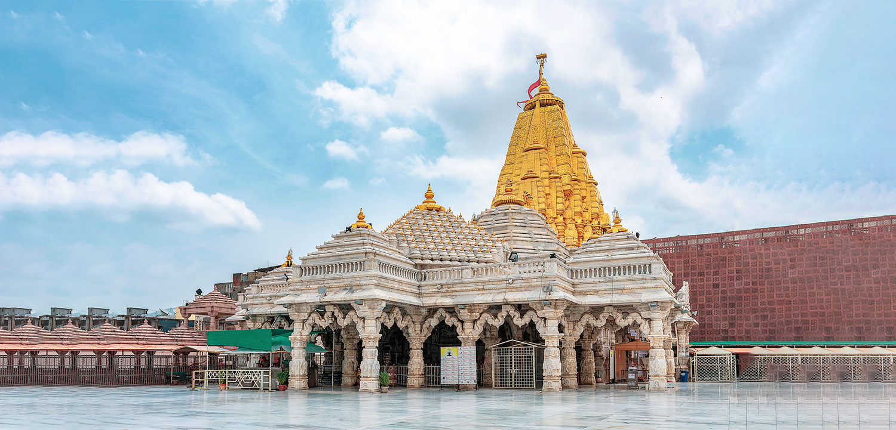
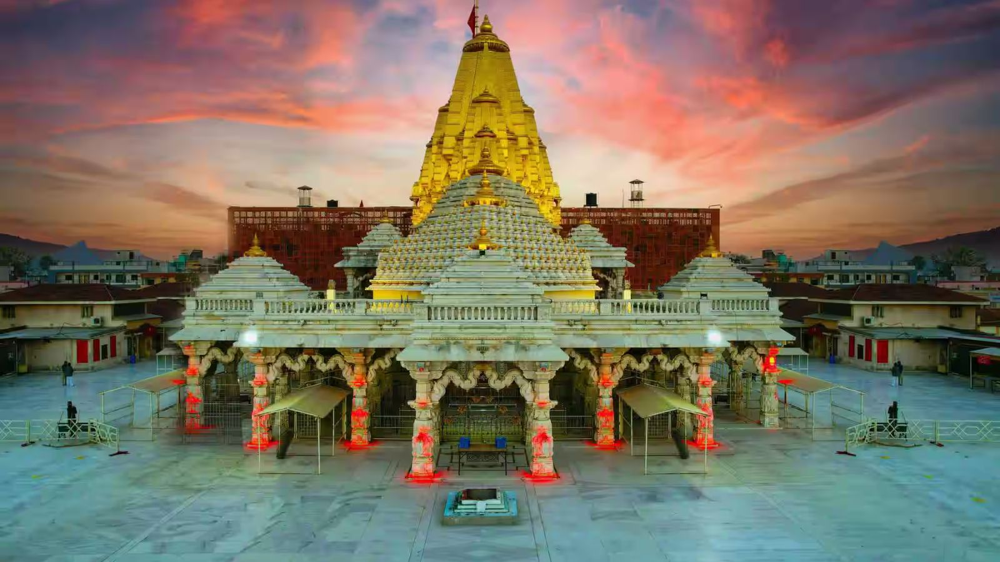

Akshardham Temple


Ambaji Temple
Ambaji (Ambājī) is a census town in Banaskantha district in the state of Gujarat, India.
Geography
Ambaji[1] is a town within taluka district Banaskantha, North Gujarat, India. It is located at 24.33°N 72.85°E.[2] It is at an altitude of 480 metres (1,570 ft). It is surrounded by the Araveli Hill range. Ambaji is within the Aravali Range[3]'line of peaks'
it is a range of mountains in western India running approximately 800 km in a northeastern direction across Indian states of Gujarat, Rajasthan, Haryana and Delhi.[5][6] It is also called Mewat hills locally. Ambaji town also in between the borders of North Gujarat and Abu Road of Rajasthan.
Demographics
As of 2011 India census,[7] Ambaji had a population of 17,753. Males constitute 9,132 of the population and females 8,621. Ambaji has an average literacy rate of 78.39%, higher than the state average of 78.03%, with 85.76% of the males and 70.78% of females literate; 14.12% of the population is under 6 years of age.
Climate
Summers are typically hot and humid with hot winds and temperatures between 26 and 46 degrees Celsius. In winter the temperature ranges between 6 and 36 degrees Celsius and rainfall is about 15 to 30 inches; in the monsoon season, average rainfall is about the same as in winter. Ambaji is at an altitude of 480 m.
Ambaji Mata Temple
Main articles: Daksha Yaga and Shakti Peethas
The shrine of Shri Amba is regarded as a revered shrine by the Shakta Shaktism sect of Hinduism attracting millions of devotees every year. It is believed that the Heart of Sati Devi has fallen here however not mentioned in any puran .
The origin of the Shakti Peetha status temple is from Daksha yaga and Sati's self immolation. Shakti Peethas were believed to have been formed when the body parts of the corpse of Sati Devi fell into different regions when Lord Shiva carried her corpse in sorrow after her death. The shrines are considered as highly revered by Shaivist (Shaivism) sect in Hinduism. The Shakti Peethas are mostly worshiped by tantra practitioners.
Ambaji Mata Temple is a pilgrimage site visited by millions of devotees during the week of the Bhadarvi Poonam fair.[9] It is one of the 51 Shakti Peethas.
It is situated at a distance of approximately 65 kilometres from Palanpur, 45 kilometres from Mount Abu, 120 kilometres from Bhinmal sub-district and 20 kilometres from Abu Road, and 185 kilometres from Ahmedabad, 50 kilometers from Kadiyadra which is near the Gujarat and Rajasthan border.
The temple of Aṁbājī is of no special archeological interest. In the garbhagr̥ha there is a crevice in the wall of the mother goddess. There is no idol, but clothing, accessories, and facial masks are arranged periodically such that different darśanas can be seen, e.g. the mother goddess riding on a tiger.
Nearby are two eternal lamps burning with ghī. Āratī is performed twice a day, and the temple priests are Brahmins. In the town, only ghī is used (never oil) and the chastity of women is strictly maintained. According to Durgāśaṁkara Kevaḷarāma Śāstrī the worship of Aṁbājī at this location dates at least to the 14th century.
Transportation
There is a bus-station of Gujarat State Road Transport Corporation (GSRTC) connecting to all major cities of India, and a railway station is at Palanpur of Banaskantha district, North Gujarat, India.
Road
Ambaji can be reached through Himatnagar road which is connected with National Highway 48 (Mumbai to Delhi). The other road which Passes through Palanpur and Danta and connects with State Highway SH 56 to reach Ambaji.
Rail
The nearest Railway station is at Abu Road which comes under the administrative control of North Western Railway zone of the Indian Railways. It has direct rail links on the broad gauge to the cities of Ajmer Chennai, Thiruvananthapuram, Mysore, Bangalore, Pune, Mumbai, Jaipur, Jodhpur, Delhi, Dehradun, Muzaffarpur, Bareilly and Jammu.
It is connected to most of the cities and towns in Gujarat such as Ahmedabad, Surat, Vadodara, Bhuj, Rajkot, Jamnagar and Porbandar. Indian Railways’ proposal to double the broad-gauge line between Palanpur and Samakhiali has received government backing. The doubling will benefit the districts of Kutch, Patan and Banaskantha in the state of Gujarat.
Air
The nearest international airport is Sardar Vallabhbhai Patel International Airport, Ahmedabad which is 179 km far from Ambaji Temple Town.